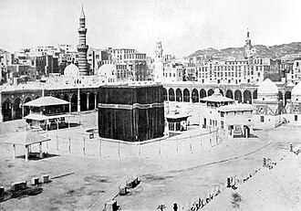

Prezentare
La mosquée al-Haram, ou grande mosquée de la Mecque, est une mosquée à La Mecque, en Arabie saoudite. Elle est le premier lieu saint de l'islam et la plus grande mosquée du monde, qui abrite en son centre la Kaaba, le plus important sanctuaire de l'islam, dans lequel est enchâssée la pierre noire. C'est elle que les musulmans tentent de toucher au cours des ṭawāf (circumambulations) qu'ils accomplissent durant leur pèlerinage (hajj) et c'est dans la direction de la Kaaba que les musulmans du monde entier se tournent pour prier.
المَسْجِدُ الحَرَام هو أعظم مسجد في الإسلام ويقع في قلب مدينة مكة غرب المملكة العربية السعودية، تتوسطه الكعبة المشرفة التي هي أول بيت وضع للناس على وجه الأرض ليعبدوا الله فيه تبعاً للعقيدة الإسلامية، وهذه هي أعظم وأقدس بقعة على وجه الأرض عند المسلمين. والمسجد الحرام هو قبلة المسلمين في صلاتهم، وإليه يحجون. سمي بالمسجد الحرام لحرمة القتال فيه منذ دخول النبي محمد إلى مكة المكرمة منتصراً. ويؤمن المسلمون أن الصلاة فيه تعادل مئة ألف صلاة.
Masjid al-Haram, also known as the Great Mosque of Mecca, is a mosque in Mecca, Saudi Arabia, serving as the holiest and most important mosque in Islam. As of 2026, the Great Mosque is the largest mosque in the world.
Mescid-i Haram, Mekke'de Kâbe’nin de içinde bulunduğu alanı çevreleyen büyük mescittir. Hürmetli Mescid anlamına gelen bu ifade Kur'an'da 16 ayette yer almaktadır.
Masjidil Haram, juga dikenal sebagai Masjid Agung Makkah, adalah sebuah masjid di Makkah, Arab Saudi, yang menjadi masjid paling suci dan terpenting dalam Islam. Hingga 2026, Masjid Agung ini merupakan masjid terbesar di dunia.
مسجد الحرام اسلام کی سب سے عظیم مسجد ہے اور یہ مغربی سعودی عرب کے شہر مکہ مکرمہ کے قلب میں واقع ہے۔ اس کے وسط میں خانۂ کعبہ واقع ہے، جو اسلامی عقیدے کے مطابق زمین پر لوگوں کے لیے عبادتِ الٰہی کی غرض سے تعمیر کیا جانے والا پہلا گھر ہے۔ مسلمانوں کے نزدیک یہ زمین کی سب سے عظیم اور مقدس ترین جگہ ہے۔ مسجد الحرام مسلمانوں کا قبلہ ہے، وہ اپنی نمازوں میں اسی کی طرف رخ کرتے ہیں اور اسی کی طرف حج کے لیے جاتے ہیں۔ اسے مسجد الحرام" اس لیے کہا جاتا ہے کہ محمد کے مکہ مکرمہ میں فاتحانہ داخلے کے بعد یہاں قتال کو حرام قرار دیا گیا۔
Die al-Harām-Moschee, auch Heilige Moschee und Große Moschee genannt, im saudi-arabischen Mekka ist die größte Moschee der Welt. Sie gilt noch vor der Prophetenmoschee in Medina und der al-Aqsa-Moschee in Jerusalem als die vorzüglichste Moschee des Islams. In ihrem Hof befinden sich die Kaaba, das zentrale Heiligtum des Islams, der Zamzam-Brunnen und der Maqām Ibrāhīm. Eine Besonderheit der al-Harām-Moschee ist, dass hier nicht nur wie in anderen Moscheen Gebet und Chutba stattfinden, sondern auch der Tawāf, also die rituelle Umkreisung der Kaaba. Auch gilt nach den Manāsik-Regeln, dass derjenige, der die al-Harām-Moschee betritt, als Erstes zur Begrüßung der Kaaba einen Tawāf zu vollziehen hat.
La Gran Mezquita de La Meca, conocida en árabe como al-Másyid al-Haram, es la mezquita más grande del mundo. Está situada en la ciudad de La Meca y su patio central contiene la Kaaba, el lugar más sagrado del islam. En la Kaaba se halla la Piedra Negra que los musulmanes tratan de tocar en el curso de las circunvalaciones durante la peregrinación.
La Sacra Moschea della Mecca è la più grande moschea del mondo e circonda il luogo più sacro dell'Islam, la Kaʿba, nella città de La Mecca. La struttura si estende su una superficie di 356.800 metri quadrati, tra cui gli spazi di preghiera all'aperto e al coperto, diventando così uno dei più grandi edifici religiosi al mondo per superficie. Di essa fanno parte la Kaʿba - il manufatto che i musulmani considerano il più sacro al mondo e verso il quale si rivolgono per la Ṣalāt - il pozzo di Zemzem, il Maqam Ibrahim e le due sopraelevazioni di Ṣafā e Marwa, che il pellegrino percorre sette volte nel Sa'y durante la ʿUmra. L'intero maṭāf, il pavimento sul quale si effettua la circumambulazione in senso antiorario (ṭawāf), è interamente lastricato e fruisce di un impianto di condizionamento, utile ad evitare il suo surriscaldamento e il suo raffreddamento. L'area sacra o spianata sacra è nota
Grande Mesquita de Meca, também chamada de Mesquita Sagrada ou Mesquita Alharam, é uma mesquita considerada o maior centro de peregrinação do mundo, localizada na cidade de Meca, na Arábia Saudita, é o lugar mais sagrado do Islamismo. Cerca de 1 bilhão de muçulmanos se voltam para ela cinco vezes ao dia para rezar, obedecendo aos preceitos do Alcorão.
Al-Masjid al-Haram is de grote moskee in de Saoedische stad Mekka. In deze moskee bevindt zich de Ka'aba. De Ka'aba is volgens de islamitische overlevering het eerste gebedshuis ter wereld. Deze moskee is ook bekend onder de naam Haram en Haram Sharif. Binnen deze moskee is er plaats voor ongeveer 820.000 moslims. Tijdens de hadj is de moskee echter overvol van de bedevaartgangers en wordt er overal in de straten van Mekka gebeden.
禁寺，又譯麥加禁寺、麥加大清真寺，是位於沙烏地阿拉伯城市麥加的清真寺，它是全球穆斯林的每日的朝拜方向，也是伊斯蘭教最神聖的地方。禁寺有25个大门和13个高大宣礼塔，以克尔白（天房）为中心，面積達356800平方公尺，约可同時容納400萬人禮拜。其阿拉伯語原名的意思為「禁止（暴力行為）的清真寺」。
マスジド・ハラーム は、メッカにあるカアバ聖殿を取り囲み、包含する形で成立しているモスクである。聖モスクあるいはハラーム・モスクともいう。英語では「メッカの大モスク」 とも呼ばれる。
마스지드 알하람(아랍어: المسجد الحرام)은 사우디아라비아 메카에 있는 모스크이다. 서방에는 신성 모스크, 또는 대모스크 또는 메카의 대모스크로 알려져 있다. 마스지드 알 하람은 무슬림에게 최고의 성지인 카바 주위를 보호하고 카바에 예배를 올리기 위한 사원이다. 따라서 지구상에서 이 사원만 키블라를 알려주는 미흐라브가 없다.
मस्जिद अल-हराम या मस्जिद अल-हरम इस्लाम के सबसे पवित्र स्थल, काबा, को पूरी तरह से घेरने वाली एक मस्जिद है। यह सउदी अरब के मक्का शहर में स्थित है और दुनिया की सबसे बड़ी मस्जिद है। दुनिया भर के मुस्लिम नमाज़ पढ़ते हुए काबे की तरफ़ मुख करते हैं और हर मुस्लिम पर अनिवार्य है कि, अगर वह इसका ज़रिया रखता हो, तो जीवन में कम-से कम एक बार यहाँ हज पर आये और काबा की तवाफ़ (परिक्रमा) करे।
Мече́ть аль-Хара́м — главная и крупнейшая в мире мечеть, во внутреннем дворе которой находится главная святыня ислама — Кааба. Расположена в Мекке, в Саудовской Аравии. Посещение мечети аль-Харам и Каабы является обязательным элементом паломничества (хаджа). Мечеть также включает в себя другие важные объекты, в том числе Чёрный камень, колодец Замзам, место пророка Ибрахима, холмы ас-Сафа и аль-Марва.
Al-Masjid Al-Haram là một nhà thờ Hồi giáo tại thành phố Mecca, Ả Rập Xê Út. Đây là thánh đường Hồi giáo lớn nhất thế giới và bao quanh một trong những nơi linh thiêng nhất của Hồi giáo, Kaʿaba. Tín đồ Hồi giáo phải quay mặt về hướng của Kaaba trong khi thực hiện Salat. Một trong Năm trụ cột của Hồi giáo đòi hỏi mọi người Hồi giáo phải thực hiện cuộc hành hương (Hajj) ít nhất một lần trong cuộc đời của mình nếu có cơ hội, bao gồm cả việc đi một vòng quanh Kaaba.
มัสยิดอัลฮะรอม มีอีกชื่อว่า มัสยิดใหญ่แห่งมักกะฮ์ เป็นมัสยิดที่ล้อมรอบกะอ์บะฮ์ในมักกะฮ์ แคว้นมักกะฮ์ ประเทศซาอุดีอาระเบีย เป็นสถานที่แสวงบุญในพิธีฮัจญ์ ซึ่งมุสลิมทุกคนต้องทำอย่างน้อยหนึ่งครั้งถ้าสามารถทำได้ และในอุมเราะฮ์ที่สามารถทำในช่วงใดก็ได้ พิธีแสวงบุญทั้งสองแบบรวมการเดินวนรอบกะอ์บะฮ์ในมัสยิด มัสยิดใหญ่ยังมีสถานที่สำคัญอื่น ๆ ได้แก่ หินดำ, บ่อซัมซัม, มะกอมอิบรอฮีม และเนินเศาะฟาและมัรวะฮ์
al-Masjid al-Haram, är världens största moské. Den är belägen i Mecka i Saudiarabien. Moskén omger Kaba, helgedomen dit muslimer vänder sig vid de dagliga bönerna, och som är muslimernas heligaste plats. Intill Kaba ligger vattenkällan Zamzam.
Moscheea Sfântă din Mecca sau Masjid al-Haram este cea mai importantă moschee din Mecca, Arabia Saudită; precum și cel mai sfânt loc al islamului. În mijlocul moscheii se află altarul Kaaba. Masjid al-Haram este cea mai mare moschee din lume. Moscheea Masjid Al-Haram este amplasată aici și este prima moschee zidită pentru oamenii acestei lumi, așa cum este spus în Coran:
Povești și relatări
Fapt istoricPiatra Neagră și „Cel demn de încredere”
Înainte de revelație, când Profetul ﷺ avea în jur de 35 de ani, tribul Quraysh a reconstruit Kaaba. Clanurile și-au disputat onoarea de a pune la loc Piatra Neagră, până la a risca un război. Au hotărât ca primul care intră în moschee să decidă: a fost Muhammad ﷺ, pe care toți îl numeau „al-Amin”, Cel demn de încredere. El a pus piatra pe o mantie, a pus fiecare clan să țină de o margine, apoi a așezat-o el însuși.
CoranIbrahim și Ismail înalță Kaaba
Coranul povestește că profetul Ibrahim și fiul său Ismail au înălțat împreună temeliile Casei, la Mecca (sura 2, versetul 127). În timpul acestei lucrări, ei Îl rugau pe Dumnezeu să le primească fapta. Coranul spune și că Dumnezeu i-a arătat lui Ibrahim locul Casei și i-a cerut s-o păstreze curată pentru cei care se roagă acolo (sura 22, versetul 26). Pentru musulmani, Kaaba este deci în primul rând un loc închinat Dumnezeului unic.
Hadith autenticHajar, Ismail și izvorul Zamzam
Potrivit unei lungi relatări a lui Ibn Abbas transmise de al-Bukhari, Ibrahim și-a lăsat soția, Hajar, și pruncul lor, Ismail, în valea pustie a Meccăi, cu puțină apă și câteva curmale. Când apa s-a terminat, Hajar a alergat de șapte ori între colinele Safa și Marwa căutând ajutor. Un înger a făcut atunci să țâșnească apa lângă copil: este izvorul Zamzam. Niște nomazi din tribul Jurhum au venit să se așeze lângă apă și așa a început orașul. Alergarea pelerinilor între Safa și Marwa amintește de acest gest al lui Hajar.
Sursa: Sahih al-Bukhari 3364 · Wikipédia : Zamzam
CoranMaqam Ibrahim, piatra pașilor
Lângă Kaaba se află Maqam Ibrahim, o piatră care poartă, potrivit tradiției, urma picioarelor lui Ibrahim, pe care stătea în timpul construcției. Coranul le cere credincioșilor să facă din Maqam Ibrahim un loc de rugăciune (sura 2, versetul 125) și îl amintește printre semnele limpezi ale Casei (sura 3, versetul 97). Potrivit lui al-Bukhari, Omar ibn al-Khattab își dorise să se facă rugăciunea acolo, iar versetul a coborât în acest sens. Astăzi piatra este ocrotită într-o mică cușcă din sticlă și metal aurit.
CoranChemarea lui Ibrahim la pelerinaj
Coranul povestește că Dumnezeu i-a poruncit lui Ibrahim să cheme oamenii la pelerinaj și că ei vor veni pe jos sau pe animale de călărie obosite, de pe toate drumurile îndepărtate (sura 22, versetul 27). Comentatorii adaugă că Ibrahim s-a întrebat cum ar putea glasul lui să ajungă atât de departe, iar Dumnezeu i-a spus să cheme și că El Se va îngriji ca chemarea să ajungă; acest amănunt vine din comentarii, nu din textul Coranului. În fiecare an, milioanele de pelerini veniți din toată lumea sunt văzute de musulmani ca răspunsul la această chemare.
Sursa: Coran 22:27 (quran.com) · Tafsir Ibn Kathir 22:27 (quran.com)
Hadith autenticPrima moschee de pe pământ
Însoțitorul Abu Dharr l-a întrebat într-o zi pe Profetul ﷺ care a fost prima moschee construită pe pământ. El a răspuns: Moscheea Sacră din Mecca, apoi moscheea al-Aqsa din Ierusalim, patruzeci de ani mai târziu. Această relatare este transmisă de al-Bukhari și Muslim. Coranul spune și că prima Casă întemeiată pentru oameni este cea de la Bakka, alt nume al Meccăi (sura 3, versetul 96).
CoranAnul elefantului
În jurul anului 570, Abraha, guvernatorul Yemenului din partea regatului Abisiniei, a pornit spre Mecca cu o armată și cel puțin un elefant ca să distrugă Kaaba. Abd al-Muttalib, bunicul Profetului, ar fi spus că el cere doar cămilele sale, căci Casa avea un Domn care s-o ocrotească (relatare din cărțile Sirei). Coranul povestește că Dumnezeu a trimis împotriva armatei păsări în cârduri care aruncau cu pietre și că ea a fost nimicită (sura 105, Elefantul). Profetul ﷺ s-a născut, potrivit tradiției, chiar în acel an.
Sursa: Coran, sourate 105 (quran.com) · Wikipedia : Year of the Elephant
Hadith autenticHijr Ismail, partea uitată a Kaabei
Alături de Kaaba, un zid scund în semicerc înconjoară un spațiu numit Hijr Ismail sau Hatim. Aișa relatează că Profetul ﷺ i-a explicat că acest spațiu făcea parte din Casă, dar că tribul Quraysh, când a reconstruit Kaaba, nu a avut destui bani câștigați în mod licit și l-a lăsat afară. El a adăugat că, dacă poporul său n-ar fi ieșit atât de recent din păgânism, ar fi reconstruit Kaaba pe temeliile lui Ibrahim (al-Bukhari și Muslim). De aceea pelerinii înconjoară și Hijr-ul, iar a te ruga înăuntrul lui înseamnă a te ruga în Kaaba.
CoranDirecția rugăciunii întoarsă spre Kaaba
După emigrarea la Medina, musulmanii s-au rugat cu fața spre Ierusalim timp de șaisprezece sau șaptesprezece luni, cum relatează al-Bara' ibn Azib la al-Bukhari. Profetul ﷺ dorea să fie întors spre Kaaba și își ridica adesea privirea spre cer. Coranul povestește că Dumnezeu i-a poruncit atunci să-și întoarcă fața spre Moscheea Sacră (sura 2, versetul 144). De atunci, toți musulmanii din lume se roagă în direcția Kaabei, numită qibla.
Hadith autenticCucerirea Meccăi și idolii sfărâmați
În anul 8 al hegirei (630), Profetul ﷺ a intrat în Mecca aproape fără luptă. Potrivit lui Abdallah ibn Mas'ud, în relatarea lui al-Bukhari, în jurul Kaabei erau trei sute șaizeci de idoli. El îi lovea cu un băț pe care îl ținea în mână, recitând versetul care spune că adevărul a venit și minciuna a pierit (sura 17, versetul 81). Imaginile din interiorul Kaabei au fost și ele îndepărtate, iar Casa a fost redată cultului Dumnezeului unic.
Hadith autenticProfetul se roagă în interiorul Kaabei
În ziua cuceririi, Profetul ﷺ a intrat în Kaaba împreună cu Usama ibn Zayd, Bilal și Uthman ibn Talha, păstrătorul cheii, iar ușa a fost închisă. Abdallah ibn Omar, ajuns primul la ieșire, l-a întrebat pe Bilal unde se rugase Profetul. Bilal i-a arătat locul, între două coloane, în fața ușii. Această relatare este transmisă de al-Bukhari și Muslim; Ibn Omar a regretat apoi că nu întrebase câte rugăciuni făcuse.
Sursa: Sahih al-Bukhari 397 · Sahih Muslim 1329
TradițieBilal cheamă la rugăciune de pe acoperișul Kaabei
Cărțile Sirei, precum cea a lui Ibn Hisham, povestesc că în ziua cuceririi Profetul ﷺ i-a cerut lui Bilal să urce pe Kaaba ca să facă chemarea la rugăciune. Bilal, fost sclav de origine abisiniană, torturat cândva la Mecca pentru credința sa, a făcut să răsune adhan-ul deasupra orașului. Unele căpetenii din Quraysh au fost șocate, ceea ce face momentul și mai puternic: omul disprețuit odinioară chema acum toată Mecca la rugăciune. Este o relatare a tradiției istorice (Sira), nu un hadith din marile culegeri.
Sursa: Wikipédia : Bilal ibn Rabah · Wikipédia (ar) : بلال بن رباح
TradițieCheia Kaabei și familia Banu Shayba
Încă dinainte de islam, paza Kaabei (hijaba) îi aparținea familiei lui Uthman ibn Talha, din neamul Banu Abd ad-Dar. În ziua cuceririi, Profetul ﷺ a luat cheia ca să deschidă Casa, apoi i-a dat-o înapoi lui Uthman ibn Talha, spunând că ea va rămâne în familia lui. Comentatorii leagă de acest episod versetul care poruncește ca lucrurile încredințate să fie înapoiate celor îndreptățiți (sura 4, versetul 58); această legătură vine din relatări ale tradiției al căror lanț este discutat. Și astăzi cheia este păstrată de urmași, numiți Banu Shayba.
Sursa: Wikipedia : Uthman ibn Talha · Coran 4:58 (quran.com)
Fapt istoricKaaba lui Ibn az-Zubayr, apoi a lui al-Hajjaj
În 683, în timpul războiului dintre Abdallah ibn az-Zubayr și omeiazi, un incendiu a avariat Kaaba. Ibn az-Zubayr a reconstruit-o, incluzând din nou Hijr Ismail în ea și dându-i două uși, potrivit hadith-ului Aișei. În 692, armata lui al-Hajjaj a asediat Mecca și a bombardat-o; Ibn az-Zubayr a fost ucis. Puțin după aceea, din porunca califului Abd al-Malik, al-Hajjaj a readus Kaaba la forma din vremea Quraysh, cu o singură ușă înălțată: este, în esență, forma pe care o vedem astăzi.
Sursa: Wikipedia : Kaaba · Sahih Muslim 1333 (hadith d'Aïcha et Ibn az-Zubayr)
Fapt istoricQarmații iau Piatra Neagră
În 930, în timpul pelerinajului, qarmații, o mișcare ismailită dizidentă stabilită în estul Arabiei, au atacat Mecca. Au ucis numeroși pelerini, au aruncat trupuri în fântâna Zamzam și au smuls Piatra Neagră. Au dus-o în capitala lor, în regiunea al-Ahsa. Piatra nu s-a întors la Mecca decât în 951-952, după o răscumpărare, la peste douăzeci de ani, spartă în mai multe bucăți.
Fapt istoricInundația și Kaaba otomană
Mecca se află în fundul unei văi, iar ploile violente au provocat adesea viituri. Sub sultanul otoman Murad al IV-lea, o mare inundație, în anul 1039 al hegirei (în jurul anilor 1629-1630), a făcut să se prăbușească o parte din zidurile Kaabei. Casa a fost atunci reconstruită cu pietre de granit din munții Meccăi, urmând exact vechiul plan. Această reconstrucție otomană este, în esență, Kaaba pe care o vedem astăzi, restaurată din nou în 1996.
Sursa: Wikipedia : Kaaba · Wikipedia : Great Mosque of Mecca
Fapt istoricKiswa, vălul negru al Kaabei
Potrivit istoricilor arabi precum Ibn Hisham, un rege al Yemenului, As'ad Abu Karib (un Tubba'), a fost primul care a acoperit Kaaba cu o țesătură, cu mult înainte de islam; este o tradiție veche. După cucerire, Profetul ﷺ a acoperit-o cu o țesătură yemenită, iar califul Omar a adus o țesătură din Egipt. Timp de secole, Egiptul a confecționat kiswa și o trimitea în fiecare an într-o mare procesiune (mahmal). Din 1927, și în întregime din 1962, ea este țesută la Mecca: în jur de 670 kg de mătase vopsită în negru, brodată cu versete în fir de aur și de argint, și schimbată în fiecare an.
Sursa: Wikipedia : Kiswah · Wikipédia : Kiswa
Fapt istoricO moschee mărită timp de paisprezece secole
În vremea Profetului ﷺ, în jurul Kaabei nu era decât un spațiu deschis, înconjurat de case. Califul Omar a cumpărat case ca s-o mărească și a construit un zid scund în jurul anului 638; Uthman a adăugat primele galerii acoperite. Abbasizii, mai ales al-Mahdi începând din 779, au făcut cea mai mare extindere a epocii; apoi otomanii, cu arhitectul Sinan în jurul anului 1570, au acoperit galeriile cu mici cupole. În secolele XX și XXI, extinderile saudite (din 1955, apoi sub regii Fahd, Abdallah și Salman) au făcut din moschee una dintre cele mai mari din lume, în stare să primească peste un milion de credincioși.
Sursa: Wikipedia : Great Mosque of Mecca · Britannica : Great Mosque of Mecca
Hadith autenticO rugăciune care valorează cât o sută de mii de rugăciuni
Potrivit lui Jabir ibn Abdallah, Profetul ﷺ a spus că o rugăciune în moscheea sa din Medina este mai bună decât o mie de rugăciuni în altă parte, cu excepția Moscheii Sacre, și că o rugăciune în Moscheea Sacră este mai bună decât o sută de mii de rugăciuni în altă parte. Acest hadith este transmis de Ibn Majah (nr. 1406); a fost considerat autentic (sahih) de al-Albani și de alți învățați. Prima parte, despre cele o mie de rugăciuni, se află și la al-Bukhari (nr. 1190), după Abu Hurayra. De aceea atâția pelerini încearcă să facă cât mai multe rugăciuni în moschee.
Relatare cu lanț slabAdam, primul constructor al Kaabei?
Unele relatări vechi, transmise mai ales de al-Azraqi și în anumite comentarii ale Coranului, spun că Adam a fost primul care a construit Casa, sau că îngerii o construiseră înaintea lui, și că potopul lui Noe a șters-o înainte ca Ibrahim s-o ridice din nou. Aceste relatări au lanțuri de transmitere slabe sau se opresc la urmași ai însoțitorilor; niciun hadith autentic nu le confirmă. Coranul vorbește doar despre Ibrahim și Ismail înălțând temeliile Casei (sura 2, versetul 127). Mulți învățați rămân deci prudenți în această privință.
Sursa: Tafsir Ibn Kathir 2:127 (quran.com) · Wikipedia : Kaaba
TradițieHajar și Ismail îngropați lângă Kaaba
Potrivit primilor istorici ai Sirei, precum Ibn Ishaq, Hajar și apoi Ismail ar fi fost îngropați în Hijr, spațiul în semicerc de lângă Kaaba. Niciun hadith autentic nu confirmă acest lucru și nu se vede nimic acolo: nu există nici mormânt, nici semn. Este o tradiție istorică veche, prezentată aici ca atare. Ea explică de ce locul poartă numele lui Ismail.
Fapt istoric1979: ocuparea Marii Moschei
La 20 noiembrie 1979, prima zi a anului 1400 al hegirei, un grup înarmat condus de Juhayman al-Otaybi a pus stăpânire pe Moscheea Sacră în timpul rugăciunii din zori și a anunțat că unul dintre ei era Mahdi. Mii de credincioși au fost prinși în capcană. După aproximativ două săptămâni de lupte, forțele saudite au recucerit moscheea la începutul lui decembrie; au fost câteva sute de morți. Evenimentul a marcat profund lumea musulmană.
Sursa: Wikipedia : Grand Mosque seizure · Wikipédia : Prise de la Grande Mosquée de La Mecque
Pe hartă
Documente și legături
- Wikipédia — Français
- Wikipédia — العربية
- Wikipédia — English
- Wikipédia — Türkçe
- Wikipédia — Bahasa Indonesia
- Wikipédia — اردو
- Wikipédia — Deutsch
- Wikipédia — Español
- Wikipédia — Italiano
- Wikipédia — Português
- Wikipédia — Nederlands
- Wikipédia — 中文
- Wikipédia — 日本語
- Wikipédia — 한국어
- Wikipédia — हिन्दी
- Wikipédia — Русский
- Wikipédia — Tiếng Việt
- Wikipédia — ไทย
- Wikipédia — Svenska
- Wikipédia — Română
- Wikidata — Q428858
Date: Wikidata (CC0), actualizate la fiecare 3 luni. Anul este cea mai veche dată de construcție cunoscută a clădirii: pentru o clădire devenită moschee mai târziu (precum Sfânta Sofia), este cea a clădirii originale. Fotografii: Wikimedia Commons, autorul și licența pe pagina fiecărei fotografii.